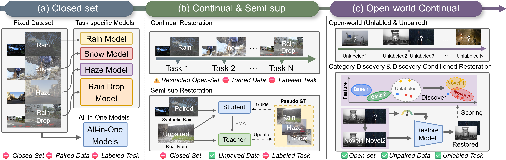
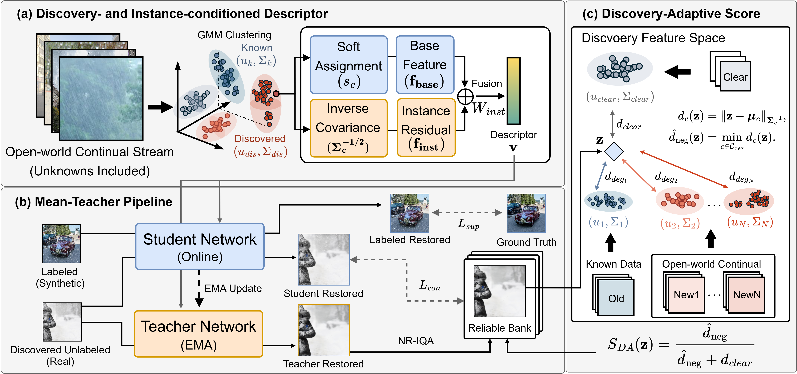

Unknown & mixed
New degradation patterns need not fit the categories defined during initial training.
DUDA.
Discover the unknown.
Restore beyond the familiar.
A continual restoration framework that discovers emerging degradations
and learns from real images without paired clean targets.
01 THE PROBLEM SETTING
Real images arrive with unknown, mixed, and changing corruptions. Can a restoration model discover what has changed—and adapt?

New degradation patterns need not fit the categories defined during initial training.
Incoming real images provide neither degradation annotations nor clean reference targets.
Adaptation must account for composition bias inherited from the original degradation mix.
The starting point: supervised pretraining on paired, known degradations. The new challenge: adaptation to unlabeled, unpaired real-world data.
THE IDEA
DUDA turns discovered degradation structure into two useful signals: how to condition restoration and which pseudo-targets to trust.
Continual category discovery expands the degradation space. An instance-aware descriptor guides the restorer, while a discovery-adaptive score helps select reliable targets for mean-teacher learning.
While all-in-one image restoration models excel in controlled, closed-set environments, they face critical limitations when deployed in open-world settings where paired supervision is unavailable and degradations are unknown and often intricately mixed. To address this challenge, we propose a continual restoration framework that integrates degradation discovery with adaptive restoration. Building on a model pre-trained on known degradation categories, our method identifies unseen degradations by measuring deviations in feature space via Mahalanobis distance and performs continual category discovery to expand the degradation space. Based on this, we introduce a discovery- and instance-conditioned descriptor that combines degradation-aware representations derived from cluster prototypes with instance-specific features, enabling adaptive conditioning for mixed and ambiguous degradations. To further handle unpaired data, we adopt a mean-teacher-based semi-supervised framework with a reliable bank for pseudo-target refinement. Crucially, we propose a discovery-adaptive score that evaluates candidate targets based on their relative proximity to degradation clusters and an anchored clear cluster, enabling degradation-aware pseudo-target selection beyond conventional no-reference image quality assessment metrics. Experiments on both controlled open-world protocols and real-world adverse weather datasets demonstrate that our approach consistently outperforms existing methods across multiple image quality metrics while improving robustness to degradation composition shifts.
02 THE FRAMEWORK
Two proposed components connect category discovery to pixel-level restoration within a mean-teacher pipeline.

Soft assignments combine embeddings initialized from known and discovered cluster prototypes. Covariance-normalized residuals add the characteristics of each individual image.
An exponential moving average teacher generates restoration candidates. A reliable bank retains selected pseudo-targets, and the student learns jointly from these targets and paired base data.
Relative Mahalanobis distances to an anchored clear cluster and the nearest degradation cluster complement no-reference image quality assessment when refining pseudo-targets.
03 REAL-WORLD RESULTS
Evaluation on real rain, haze, and snow. DUDA improves over its zero-shot initialization across all four overall quality metrics.
+2.12 vs. zero-shot
+0.026 vs. zero-shot
+0.107 vs. zero-shot
+0.081 vs. zero-shot
| Method | Adaptation setting | MUSIQ ↑ | CLIP-IQA ↑ | LIQE ↑ | Q-Align ↑ |
|---|---|---|---|---|---|
| Restormer | Zero-shot | 56.38 | 0.438 | 2.456 | 3.503 |
| PromptIR | Zero-shot | 56.07 | 0.443 | 2.437 | 3.491 |
| DA-CLIP | Zero-shot | 55.59 | 0.412 | 2.438 | 3.480 |
| DUDA · initialization | Zero-shot | 56.67 | 0.468 | 2.595 | 3.512 |
| WResVLM | Non-blind | 59.34 | 0.456 | 2.640 | 3.574 |
| DUDA | Blind | 58.79 | 0.494 | 2.702 | 3.593 |
Blind: no degradation labels for adaptation. Non-blind: degradation categories are available.
Selected comparisons from the paper. Bold indicates the best value among the displayed methods.
All values follow the manuscript’s reported precision. RealRain-2320 / RTTS / Snow100K-R. The metrics assess image quality without paired reference images.
04 UNDERSTANDING THE GAINS
Component ablations isolate the contribution of instance-aware conditioning and discovery-guided pseudo-target refinement.
Adding instance residuals improves restoration over base embeddings alone.
The discovery-adaptive score improves on refinement without this scoring component.
The discovery-adaptive score reduces color error under balanced, low-light-biased, and haze-biased training distributions.
CIEDE2000 ↓ · lower is better10.81 → 9.87
11.75 → 10.71
9.53 → 8.73
05 EXPLORE DUDA
The official implementation includes feature learning, category discovery, restoration training, and evaluation.
Explore the code